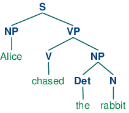

7. Extracting Information from Text
For any given question, it's likely that someone has written the answer down somewhere. The amount of natural language text that is available in electronic form is truly staggering, and is increasing every day. However, the complexity of natural language can make it very difficult to access the information in that text. The state of the art in NLP is still a long way from being able to build general-purpose representations of meaning from unrestricted text. If we instead focus our efforts on a limited set of questions or "entity relations," such as "where are different facilities located," or "who is employed by what company," we can make significant progress. The goal of this chapter is to answer the following questions:
- How can we build a system that extracts structured data, such as tables, from unstructured text?
- What are some robust methods for identifying the entities and relationships described in a text?
- Which corpora are appropriate for this work, and how do we use them for training and evaluating our models?
Along the way, we'll apply techniques from the last two chapters to the problems of chunking and named-entity recognition.
1 Information Extraction
Information comes in many shapes and sizes. One important form is structured data, where there is a regular and predictable organization of entities and relationships. For example, we might be interested in the relation between companies and locations. Given a particular company, we would like to be able to identify the locations where it does business; conversely, given a location, we would like to discover which companies do business in that location. If our data is in tabular form, such as the example in 1.1, then answering these queries is straightforward.
| OrgName | LocationName |
|---|---|
| Omnicom | New York |
| DDB Needham | New York |
| Kaplan Thaler Group | New York |
| BBDO South | Atlanta |
| Georgia-Pacific | Atlanta |
If this location data was stored in Python as a list of tuples (entity, relation, entity), then the question "Which organizations operate in Atlanta?" could be translated as follows:
|
| OrgName |
|---|
| BBDO South |
| Georgia-Pacific |
Things are more tricky if we try to get similar information out of text. For example, consider the following snippet (from nltk.corpus.ieer, for fileid NYT19980315.0085).
| (1) | The fourth Wells account moving to another agency is the packaged paper-products division of Georgia-Pacific Corp., which arrived at Wells only last fall. Like Hertz and the History Channel, it is also leaving for an Omnicom-owned agency, the BBDO South unit of BBDO Worldwide. BBDO South in Atlanta, which handles corporate advertising for Georgia-Pacific, will assume additional duties for brands like Angel Soft toilet tissue and Sparkle paper towels, said Ken Haldin, a spokesman for Georgia-Pacific in Atlanta. |
If you read through (1), you will glean the information required to answer the example question. But how do we get a machine to understand enough about (1) to return the answers in 1.2? This is obviously a much harder task. Unlike 1.1, (1) contains no structure that links organization names with location names.
One approach to this problem involves building a very general representation of meaning (10.). In this chapter we take a different approach, deciding in advance that we will only look for very specific kinds of information in text, such as the relation between organizations and locations. Rather than trying to use text like (1) to answer the question directly, we first convert the unstructured data of natural language sentences into the structured data of 1.1. Then we reap the benefits of powerful query tools such as SQL. This method of getting meaning from text is called Information Extraction.
Information Extraction has many applications, including business intelligence, resume harvesting, media analysis, sentiment detection, patent search, and email scanning. A particularly important area of current research involves the attempt to extract structured data out of electronically-available scientific literature, especially in the domain of biology and medicine.
1.1 Information Extraction Architecture
1.1 shows the architecture for a simple information extraction system. It begins by processing a document using several of the procedures discussed in 3 and 5.: first, the raw text of the document is split into sentences using a sentence segmenter, and each sentence is further subdivided into words using a tokenizer. Next, each sentence is tagged with part-of-speech tags, which will prove very helpful in the next step, named entity detection. In this step, we search for mentions of potentially interesting entities in each sentence. Finally, we use relation detection to search for likely relations between different entities in the text.

Figure 1.1: Simple Pipeline Architecture for an Information Extraction System. This system takes the raw text of a document as its input, and generates a list of (entity, relation, entity) tuples as its output. For example, given a document that indicates that the company Georgia-Pacific is located in Atlanta, it might generate the tuple ([ORG: 'Georgia-Pacific'] 'in' [LOC: 'Atlanta']).
To perform the first three tasks, we can define a simple function that
simply connects together NLTK's default sentence segmenter
![[1]](callouts/callout1.gif) , word tokenizer
, word tokenizer ![[2]](callouts/callout2.gif) , and part-of-speech tagger
, and part-of-speech tagger
![[3]](callouts/callout3.gif) :
:
Note
Remember that our program samples assume you begin your interactive session or your program with: import nltk, re, pprint
Next, in named entity detection, we segment and label the entities that might participate in interesting relations with one another. Typically, these will be definite noun phrases such as the knights who say "ni", or proper names such as Monty Python. In some tasks it is useful to also consider indefinite nouns or noun chunks, such as every student or cats, and these do not necessarily refer to entities in the same way as definite NPs and proper names.
Finally, in relation extraction, we search for specific patterns between pairs of entities that occur near one another in the text, and use those patterns to build tuples recording the relationships between the entities.
2 Chunking
The basic technique we will use for entity detection is chunking, which segments and labels multi-token sequences as illustrated in 2.1. The smaller boxes show the word-level tokenization and part-of-speech tagging, while the large boxes show higher-level chunking. Each of these larger boxes is called a chunk. Like tokenization, which omits whitespace, chunking usually selects a subset of the tokens. Also like tokenization, the pieces produced by a chunker do not overlap in the source text.

Figure 2.1: Segmentation and Labeling at both the Token and Chunk Levels
In this section, we will explore chunking in some depth, beginning with the definition and representation of chunks. We will see regular expression and n-gram approaches to chunking, and will develop and evaluate chunkers using the CoNLL-2000 chunking corpus. We will then return in (5) and 6 to the tasks of named entity recognition and relation extraction.
2.1 Noun Phrase Chunking
We will begin by considering the task of noun phrase chunking, or NP-chunking, where we search for chunks corresponding to individual noun phrases. For example, here is some Wall Street Journal text with NP-chunks marked using brackets:
| (2) | [ The/DT market/NN ] for/IN [ system-management/NN software/NN ] for/IN [ Digital/NNP ] [ 's/POS hardware/NN ] is/VBZ fragmented/JJ enough/RB that/IN [ a/DT giant/NN ] such/JJ as/IN [ Computer/NNP Associates/NNPS ] should/MD do/VB well/RB there/RB ./. |
As we can see, NP-chunks are often smaller pieces than complete noun phrases. For example, the market for system-management software for Digital's hardware is a single noun phrase (containing two nested noun phrases), but it is captured in NP-chunks by the simpler chunk the market. One of the motivations for this difference is that NP-chunks are defined so as not to contain other NP-chunks. Consequently, any prepositional phrases or subordinate clauses that modify a nominal will not be included in the corresponding NP-chunk, since they almost certainly contain further noun phrases.
One of the most useful sources of information for NP-chunking is
part-of-speech tags. This is one of the motivations for
performing part-of-speech tagging in our information extraction
system. We demonstrate this approach using an example sentence that
has been part-of-speech tagged in 2.2. In order to create an
NP-chunker, we will first define a chunk grammar, consisting of rules
that indicate how sentences should be chunked. In this case, we will
define a simple grammar with a single regular-expression rule
. This rule says that an NP chunk should be formed
whenever the chunker finds an optional determiner (DT) followed by any
number of adjectives (JJ) and then a noun (NN). Using this grammar,
we create a chunk parser , and test it on our example
sentence ![[4]](callouts/callout4.gif) . The result is a tree, which we can either
print
. The result is a tree, which we can either
print ![[5]](callouts/callout5.gif) , or display graphically
, or display graphically ![[6]](callouts/callout6.gif) .
.
| ||
Example 2.2 (code_chunkex.py): Figure 2.2: Example of a Simple Regular Expression Based NP Chunker. |
2.2 Tag Patterns
The rules that make up a chunk grammar use tag patterns to describe sequences of tagged words. A tag pattern is a sequence of part-of-speech tags delimited using angle brackets, e.g. <DT>?<JJ>*<NN>. Tag patterns are similar to regular expression patterns (3.4). Now, consider the following noun phrases from the Wall Street Journal:
another/DT sharp/JJ dive/NN trade/NN figures/NNS any/DT new/JJ policy/NN measures/NNS earlier/JJR stages/NNS Panamanian/JJ dictator/NN Manuel/NNP Noriega/NNP
We can match these noun phrases using a slight refinement of the first tag pattern above, i.e. <DT>?<JJ.*>*<NN.*>+. This will chunk any sequence of tokens beginning with an optional determiner, followed by zero or more adjectives of any type (including relative adjectives like earlier/JJR), followed by one or more nouns of any type. However, it is easy to find many more complicated examples which this rule will not cover:
his/PRP$ Mansion/NNP House/NNP speech/NN the/DT price/NN cutting/VBG 3/CD %/NN to/TO 4/CD %/NN more/JJR than/IN 10/CD %/NN the/DT fastest/JJS developing/VBG trends/NNS 's/POS skill/NN
Note
Your Turn: Try to come up with tag patterns to cover these cases. Test them using the graphical interface nltk.app.chunkparser(). Continue to refine your tag patterns with the help of the feedback given by this tool.
2.3 Chunking with Regular Expressions
To find the chunk structure for a given sentence, the RegexpParser chunker begins with a flat structure in which no tokens are chunked. The chunking rules are applied in turn, successively updating the chunk structure. Once all of the rules have been invoked, the resulting chunk structure is returned.
2.3 shows a
simple chunk grammar consisting of two rules. The first rule
matches an optional determiner or possessive pronoun,
zero or more adjectives, then a noun.
The second rule matches one or more proper nouns.
We also define an example sentence to be chunked ,
and run the chunker on this input .
| ||
| ||
Example 2.3 (code_chunker1.py): Figure 2.3: Simple Noun Phrase Chunker |
Note
The $ symbol is a special character in regular expressions, and must be backslash escaped in order to match the tag PP$.
If a tag pattern matches at overlapping locations, the leftmost match takes precedence. For example, if we apply a rule that matches two consecutive nouns to a text containing three consecutive nouns, then only the first two nouns will be chunked:
|
Once we have created the chunk for money market, we have removed the context that would have permitted fund to be included in a chunk. This issue would have been avoided with a more permissive chunk rule, e.g. NP: {<NN>+}.
Note
We have added a comment to each of our chunk rules. These are optional; when they are present, the chunker prints these comments as part of its tracing output.
2.4 Exploring Text Corpora
In 2 we saw how we could interrogate a tagged corpus to extract phrases matching a particular sequence of part-of-speech tags. We can do the same work more easily with a chunker, as follows:
|
Note
Your Turn: Encapsulate the above example inside a function find_chunks() that takes a chunk string like "CHUNK: {<V.*> <TO> <V.*>}" as an argument. Use it to search the corpus for several other patterns, such as four or more nouns in a row, e.g. "NOUNS: {<N.*>{4,}}"
2.5 Chinking
Sometimes it is easier to define what we want to exclude from a chunk. We can define a chink to be a sequence of tokens that is not included in a chunk. In the following example, barked/VBD at/IN is a chink:
[ the/DT little/JJ yellow/JJ dog/NN ] barked/VBD at/IN [ the/DT cat/NN ]
Chinking is the process of removing a sequence of tokens from a chunk. If the matching sequence of tokens spans an entire chunk, then the whole chunk is removed; if the sequence of tokens appears in the middle of the chunk, these tokens are removed, leaving two chunks where there was only one before. If the sequence is at the periphery of the chunk, these tokens are removed, and a smaller chunk remains. These three possibilities are illustrated in 2.1.
| ` ` | Entire chunk | Middle of a chunk | End of a chunk |
|---|---|---|---|
| Input | [a/DT little/JJ dog/NN] | [a/DT little/JJ dog/NN] | [a/DT little/JJ dog/NN] |
| Operation | Chink "DT JJ NN" | Chink "JJ" | Chink "NN" |
| Pattern | }DT JJ NN{ | }JJ{ | }NN{ |
| Output | a/DT little/JJ dog/NN | [a/DT] little/JJ [dog/NN] | [a/DT little/JJ] dog/NN |
In 2.4, we put the entire sentence into a single chunk, then excise the chinks.
| ||
| ||
Example 2.4 (code_chinker.py): Figure 2.4: Simple Chinker |
2.6 Representing Chunks: Tags vs Trees
As befits their intermediate status between tagging and parsing (8.), chunk structures can be represented using either tags or trees. The most widespread file representation uses IOB tags. In this scheme, each token is tagged with one of three special chunk tags, I (inside), O (outside), or B (begin). A token is tagged as B if it marks the beginning of a chunk. Subsequent tokens within the chunk are tagged I. All other tokens are tagged O. The B and I tags are suffixed with the chunk type, e.g. B-NP, I-NP. Of course, it is not necessary to specify a chunk type for tokens that appear outside a chunk, so these are just labeled O. An example of this scheme is shown in 2.5.

Figure 2.5: Tag Representation of Chunk Structures
IOB tags have become the standard way to represent chunk structures in files, and we will also be using this format. Here is how the information in 2.5 would appear in a file:
We PRP B-NP saw VBD O the DT B-NP yellow JJ I-NP dog NN I-NP
In this representation there is one token per line, each with its part-of-speech tag and chunk tag. This format permits us to represent more than one chunk type, so long as the chunks do not overlap. As we saw earlier, chunk structures can also be represented using trees. These have the benefit that each chunk is a constituent that can be manipulated directly. An example is shown in 2.6.

Figure 2.6: Tree Representation of Chunk Structures
Note
NLTK uses trees for its internal representation of chunks, but provides methods for reading and writing such trees to the IOB format.
3 Developing and Evaluating Chunkers
Now you have a taste of what chunking does, but we haven't explained how to evaluate chunkers. As usual, this requires a suitably annotated corpus. We begin by looking at the mechanics of converting IOB format into an NLTK tree, then at how this is done on a larger scale using a chunked corpus. We will see how to score the accuracy of a chunker relative to a corpus, then look at some more data-driven ways to search for NP chunks. Our focus throughout will be on expanding the coverage of a chunker.
3.1 Reading IOB Format and the CoNLL 2000 Corpus
Using the corpus module we can load Wall Street Journal text that has been tagged then chunked using the IOB notation. The chunk categories provided in this corpus are NP, VP and PP. As we have seen, each sentence is represented using multiple lines, as shown below:
he PRP B-NP accepted VBD B-VP the DT B-NP position NN I-NP ...
A conversion function chunk.conllstr2tree() builds a tree representation from one of these multi-line strings. Moreover, it permits us to choose any subset of the three chunk types to use, here just for NP chunks:
|
We can use the NLTK corpus module to access a larger amount of chunked text. The CoNLL 2000 corpus contains 270k words of Wall Street Journal text, divided into "train" and "test" portions, annotated with part-of-speech tags and chunk tags in the IOB format. We can access the data using nltk.corpus.conll2000. Here is an example that reads the 100th sentence of the "train" portion of the corpus:
|
As you can see, the CoNLL 2000 corpus contains three chunk types: NP chunks, which we have already seen; VP chunks such as has already delivered; and PP chunks such as because of. Since we are only interested in the NP chunks right now, we can use the chunk_types argument to select them:
|
3.2 Simple Evaluation and Baselines
Now that we can access a chunked corpus, we can evaluate chunkers. We start off by establishing a baseline for the trivial chunk parser cp that creates no chunks:
|
The IOB tag accuracy indicates that more than a third of the words are tagged with O, i.e. not in an NP chunk. However, since our tagger did not find any chunks, its precision, recall, and f-measure are all zero. Now let's try a naive regular expression chunker that looks for tags beginning with letters that are characteristic of noun phrase tags (e.g. CD, DT, and JJ).
|
As you can see, this approach achieves decent results. However, we can improve on it by adopting a more data-driven approach, where we use the training corpus to find the chunk tag (I, O, or B) that is most likely for each part-of-speech tag. In other words, we can build a chunker using a unigram tagger (4). But rather than trying to determine the correct part-of-speech tag for each word, we are trying to determine the correct chunk tag, given each word's part-of-speech tag.
In 3.1, we define the UnigramChunker class, which
uses a unigram tagger to label sentences with chunk tags. Most of the
code in this class is simply used to convert back and forth between
the chunk tree representation used by NLTK's ChunkParserI
interface, and the IOB representation used by the embedded tagger.
The class defines two methods: a constructor
which is called when we build a new
UnigramChunker; and the parse method
which is used to chunk new sentences.
| ||
Example 3.1 (code_unigram_chunker.py): Figure 3.1: Noun Phrase Chunking with a Unigram Tagger |
The constructor expects a list of
training sentences, which will be in the form of chunk trees. It
first converts training data to a form that is suitable for training the
tagger, using tree2conlltags to map each chunk tree to a list of
word,tag,chunk triples. It then uses that converted training data
to train a unigram tagger, and stores it in self.tagger for later
use.
The parse method takes a tagged sentence
as its input, and begins by extracting the part-of-speech tags from
that sentence. It then tags the part-of-speech tags with IOB chunk
tags, using the tagger self.tagger that was trained in the
constructor. Next, it extracts the chunk tags, and combines them with
the original sentence, to yield conlltags. Finally, it uses
conlltags2tree to convert the result back into a chunk tree.
Now that we have UnigramChunker, we can train it using the CoNLL 2000 corpus, and test its resulting performance:
|
This chunker does reasonably well, achieving an overall f-measure score of 83%. Let's take a look at what it's learned, by using its unigram tagger to assign a tag to each of the part-of-speech tags that appear in the corpus:
|
It has discovered that most punctuation marks occur outside of NP chunks, with the exception of # and $, both of which are used as currency markers. It has also found that determiners (DT) and possessives (PRP$ and WP$) occur at the beginnings of NP chunks, while noun types (NN, NNP, NNPS, NNS) mostly occur inside of NP chunks.
Having built a unigram chunker, it is quite easy to build a bigram
chunker: we simply change the class name to BigramChunker, and
modify line in 3.1
to construct a BigramTagger rather than a UnigramTagger.
The resulting chunker has slightly higher performance than the unigram chunker:
|
3.3 Training Classifier-Based Chunkers
Both the regular-expression based chunkers and the n-gram chunkers decide what chunks to create entirely based on part-of-speech tags. However, sometimes part-of-speech tags are insufficient to determine how a sentence should be chunked. For example, consider the following two statements:
| (3) |
|
These two sentences have the same part-of-speech tags, yet they are chunked differently. In the first sentence, the farmer and rice are separate chunks, while the corresponding material in the second sentence, the computer monitor, is a single chunk. Clearly, we need to make use of information about the content of the words, in addition to just their part-of-speech tags, if we wish to maximize chunking performance.
One way that we can incorporate information about the content of words is to use a classifier-based tagger to chunk the sentence. Like the n-gram chunker considered in the previous section, this classifier-based chunker will work by assigning IOB tags to the words in a sentence, and then converting those tags to chunks. For the classifier-based tagger itself, we will use the same approach that we used in 1 to build a part-of-speech tagger.
The basic code for the classifier-based NP chunker is shown in
3.2. It consists of two classes. The first
class is almost identical to the
ConsecutivePosTagger class from 1.5.
The only two differences are that it calls a different feature
extractor and that it uses a MaxentClassifier rather
than a NaiveBayesClassifier . The second class
is basically a wrapper around the tagger class that
turns it into a chunker. During training, this second class maps the
chunk trees in the training corpus into tag sequences; in the
parse() method, it converts the tag sequence provided by the
tagger back into a chunk tree.
| ||
Example 3.2 (code_classifier_chunker.py): Figure 3.2: Noun Phrase Chunking with a Consecutive Classifier |
The only piece left to fill in is the feature extractor. We begin by defining a simple feature extractor which just provides the part-of-speech tag of the current token. Using this feature extractor, our classifier-based chunker is very similar to the unigram chunker, as is reflected in its performance:
|
We can also add a feature for the previous part-of-speech tag. Adding this feature allows the classifier to model interactions between adjacent tags, and results in a chunker that is closely related to the bigram chunker.
|
Next, we'll try adding a feature for the current word, since we hypothesized that word content should be useful for chunking. We find that this feature does indeed improve the chunker's performance, by about 1.5 percentage points (which corresponds to about a 10% reduction in the error rate).
|
Finally, we can try extending the feature extractor with a variety of
additional features, such as lookahead features ,
paired features , and complex contextual features
. This last feature, called tags-since-dt, creates a
string describing the set of all part-of-speech tags that have been
encountered since the most recent determiner, or since the beginning
of the sentence if there is no determiner before index i.
.
|
|
|
Note
Your Turn: Try adding different features to the feature extractor function npchunk_features, and see if you can further improve the performance of the NP chunker.
4 Recursion in Linguistic Structure
4.1 Building Nested Structure with Cascaded Chunkers
So far, our chunk structures have been relatively flat. Trees consist of tagged tokens, optionally grouped under a chunk node such as NP. However, it is possible to build chunk structures of arbitrary depth, simply by creating a multi-stage chunk grammar containing recursive rules. 4.1 has patterns for noun phrases, prepositional phrases, verb phrases, and sentences. This is a four-stage chunk grammar, and can be used to create structures having a depth of at most four.
| ||
| ||
Example 4.1 (code_cascaded_chunker.py): Figure 4.1: A Chunker that Handles NP, PP, VP and S |
Unfortunately this result misses the VP headed by saw. It has
other shortcomings too. Let's see what happens when we apply this
chunker to a sentence having deeper nesting. Notice that it fails to
identify the VP chunk starting at .
|
The solution to these problems is to get the chunker to loop over its patterns: after trying all of them, it repeats the process. We add an optional second argument loop to specify the number of times the set of patterns should be run:
|
Note
This cascading process enables us to create deep structures. However, creating and debugging a cascade is difficult, and there comes a point where it is more effective to do full parsing (see 8.). Also, the cascading process can only produce trees of fixed depth (no deeper than the number of stages in the cascade), and this is insufficient for complete syntactic analysis.
4.2 Trees
A tree is a set of connected labeled nodes, each reachable by a unique path from a distinguished root node. Here's an example of a tree (note that they are standardly drawn upside-down):
| (4) |  |
We use a 'family' metaphor to talk about the relationships of nodes in a tree: for example, S is the parent of VP; conversely VP is a child of S. Also, since NP and VP are both children of S, they are also siblings. For convenience, there is also a text format for specifying trees:
|
Although we will focus on syntactic trees, trees can be used to encode any homogeneous hierarchical structure that spans a sequence of linguistic forms (e.g. morphological structure, discourse structure). In the general case, leaves and node values do not have to be strings.
In NLTK, we create a tree by giving a node label and a list of children:
|
We can incorporate these into successively larger trees as follows:
|
Here are some of the methods available for tree objects:
|
The bracketed representation for complex trees can be difficult to read. In these cases, the draw method can be very useful. It opens a new window, containing a graphical representation of the tree. The tree display window allows you to zoom in and out, to collapse and expand subtrees, and to print the graphical representation to a postscript file (for inclusion in a document).
|

4.3 Tree Traversal
It is standard to use a recursive function to traverse a tree. The listing in 4.2 demonstrates this.
| ||
Example 4.2 (code_traverse.py): Figure 4.2: A Recursive Function to Traverse a Tree |
5 Named Entity Recognition
At the start of this chapter, we briefly introduced named entities (NEs). Named entities are definite noun phrases that refer to specific types of individuals, such as organizations, persons, dates, and so on. 5.1 lists some of the more commonly used types of NEs. These should be self-explanatory, except for "Facility": human-made artifacts in the domains of architecture and civil engineering; and "GPE": geo-political entities such as city, state/province, and country.
| NE Type | Examples |
|---|---|
| ORGANIZATION | Georgia-Pacific Corp., WHO |
| PERSON | Eddy Bonte, President Obama |
| LOCATION | Murray River, Mount Everest |
| DATE | June, 2008-06-29 |
| TIME | two fifty a m, 1:30 p.m. |
| MONEY | 175 million Canadian Dollars, GBP 10.40 |
| PERCENT | twenty pct, 18.75 % |
| FACILITY | Washington Monument, Stonehenge |
| GPE | South East Asia, Midlothian |
The goal of a named entity recognition (NER) system is to identify all textual mentions of the named entities. This can be broken down into two sub-tasks: identifying the boundaries of the NE, and identifying its type. While named entity recognition is frequently a prelude to identifying relations in Information Extraction, it can also contribute to other tasks. For example, in Question Answering (QA), we try to improve the precision of Information Retrieval by recovering not whole pages, but just those parts which contain an answer to the user's question. Most QA systems take the documents returned by standard Information Retrieval, and then attempt to isolate the minimal text snippet in the document containing the answer. Now suppose the question was Who was the first President of the US?, and one of the documents that was retrieved contained the following passage:
| (5) | The Washington Monument is the most prominent structure in Washington, D.C. and one of the city's early attractions. It was built in honor of George Washington, who led the country to independence and then became its first President. |
Analysis of the question leads us to expect that an answer should be of the form X was the first President of the US, where X is not only a noun phrase, but also refers to a named entity of type PERSON. This should allow us to ignore the first sentence in the passage. While it contains two occurrences of Washington, named entity recognition should tell us that neither of them has the correct type.
How do we go about identifying named entities? One option would be to look up each word in an appropriate list of names. For example, in the case of locations, we could use a gazetteer, or geographical dictionary, such as the Alexandria Gazetteer or the Getty Gazetteer. However, doing this blindly runs into problems, as shown in 5.1.

Figure 5.1: Location Detection by Simple Lookup for a News Story: Looking up every word in a gazetteer is error-prone; case distinctions may help, but these are not always present.
Observe that the gazetteer has good coverage of locations in many countries, and incorrectly finds locations like Sanchez in the Dominican Republic and On in Vietnam. Of course we could omit such locations from the gazetteer, but then we won't be able to identify them when they do appear in a document.
It gets even harder in the case of names for people or organizations. Any list of such names will probably have poor coverage. New organizations come into existence every day, so if we are trying to deal with contemporary newswire or blog entries, it is unlikely that we will be able to recognize many of the entities using gazetteer lookup.
Another major source of difficulty is caused by the fact that many named entity terms are ambiguous. Thus May and North are likely to be parts of named entities for DATE and LOCATION, respectively, but could both be part of a PERSON; conversely Christian Dior looks like a PERSON but is more likely to be of type ORGANIZATION. A term like Yankee will be ordinary modifier in some contexts, but will be marked as an entity of type ORGANIZATION in the phrase Yankee infielders.
Further challenges are posed by multi-word names like Stanford University, and by names that contain other names such as Cecil H. Green Library and Escondido Village Conference Service Center. In named entity recognition, therefore, we need to be able to identify the beginning and end of multi-token sequences.
Named entity recognition is a task that is well-suited to the type of classifier-based approach that we saw for noun phrase chunking. In particular, we can build a tagger that labels each word in a sentence using the IOB format, where chunks are labeled by their appropriate type. Here is part of the CONLL 2002 (conll2002) Dutch training data:
Eddy N B-PER Bonte N I-PER is V O woordvoerder N O van Prep O diezelfde Pron O Hogeschool N B-ORG . Punc O
In this representation, there is one token per line, each with its part-of-speech tag and its named entity tag. Based on this training corpus, we can construct a tagger that can be used to label new sentences; and use the nltk.chunk.conlltags2tree() function to convert the tag sequences into a chunk tree.
NLTK provides a classifier that has already been trained to recognize named entities,
accessed with the function nltk.ne_chunk(). If we set the
parameter binary=True , then named entities are just
tagged as NE; otherwise, the classifier adds category labels such
as PERSON, ORGANIZATION, and GPE.
|
|
6 Relation Extraction
Once named entities have been identified in a text, we then want to extract the relations that exist between them. As indicated earlier, we will typically be looking for relations between specified types of named entity. One way of approaching this task is to initially look for all triples of the form (X, α, Y), where X and Y are named entities of the required types, and α is the string of words that intervenes between X and Y. We can then use regular expressions to pull out just those instances of α that express the relation that we are looking for. The following example searches for strings that contain the word in. The special regular expression (?!\b.+ing\b) is a negative lookahead assertion that allows us to disregard strings such as success in supervising the transition of, where in is followed by a gerund.
|
Searching for the keyword in works reasonably well, though it will also retrieve false positives such as [ORG: House Transportation Committee] , secured the most money in the [LOC: New York]; there is unlikely to be simple string-based method of excluding filler strings such as this.
As shown above, the conll2002 Dutch corpus contains not just named entity
annotation but also part-of-speech tags. This allows us to devise
patterns that are sensitive to these tags, as shown in the next
example. The method clause() prints out the relations in a
clausal form, where the binary relation symbol is specified as the
value of parameter relsym .
|
Note
Your Turn: Replace the last line , by
print(nltk.rtuple(rel, lcon=True, rcon=True)). This will show you
the actual words that intervene between the two NEs and
also their left and right context, within a default 10-word
window. With the help of a Dutch dictionary, you might be able to
figure out why the result VAN('annie_lennox', 'eurythmics') is
a false hit.
7 Summary
- Information extraction systems search large bodies of unrestricted text for specific types of entities and relations, and use them to populate well-organized databases. These databases can then be used to find answers for specific questions.
- The typical architecture for an information extraction system begins by segmenting, tokenizing, and part-of-speech tagging the text. The resulting data is then searched for specific types of entity. Finally, the information extraction system looks at entities that are mentioned near one another in the text, and tries to determine whether specific relationships hold between those entities.
- Entity recognition is often performed using chunkers, which segment multi-token sequences, and label them with the appropriate entity type. Common entity types include ORGANIZATION, PERSON, LOCATION, DATE, TIME, MONEY, and GPE (geo-political entity).
- Chunkers can be constructed using rule-based systems, such as the RegexpParser class provided by NLTK; or using machine learning techniques, such as the ConsecutiveNPChunker presented in this chapter. In either case, part-of-speech tags are often a very important feature when searching for chunks.
- Although chunkers are specialized to create relatively flat data structures, where no two chunks are allowed to overlap, they can be cascaded together to build nested structures.
- Relation extraction can be performed using either rule-based systems which typically look for specific patterns in the text that connect entities and the intervening words; or using machine-learning systems which typically attempt to learn such patterns automatically from a training corpus.
8 Further Reading
Extra materials for this chapter are posted at http://nltk.org/, including links to freely available resources on the web. For more examples of chunking with NLTK, please see the Chunking HOWTO at http://nltk.org/howto.
The popularity of chunking is due in great part to pioneering work by Abney e.g., (Church, Young, & Bloothooft, 1996). Abney's Cass chunker is described in http://www.vinartus.net/spa/97a.pdf.
The word chink initially meant a sequence of stopwords, according to a 1975 paper by Ross and Tukey (Church, Young, & Bloothooft, 1996).
The IOB format (or sometimes BIO Format) was developed for NP chunking by (Ramshaw & Marcus, 1995), and was used for the shared NP bracketing task run by the Conference on Natural Language Learning (CoNLL) in 1999. The same format was adopted by CoNLL 2000 for annotating a section of Wall Street Journal text as part of a shared task on NP chunking.
Section 13.5 of (Jurafsky & Martin, 2008) contains a discussion of chunking. Chapter 22 covers information extraction, including named entity recognition. For information about text mining in biology and medicine, see (Ananiadou & McNaught, 2006).
9 Exercises
- ☼ The IOB format categorizes tagged tokens as I, O and B. Why are three tags necessary? What problem would be caused if we used I and O tags exclusively?
- ☼ Write a tag pattern to match noun phrases containing plural head nouns, e.g. "many/JJ researchers/NNS", "two/CD weeks/NNS", "both/DT new/JJ positions/NNS". Try to do this by generalizing the tag pattern that handled singular noun phrases.
- ☼ Pick one of the three chunk types in the CoNLL corpus. Inspect the CoNLL corpus and try to observe any patterns in the POS tag sequences that make up this kind of chunk. Develop a simple chunker using the regular expression chunker nltk.RegexpParser. Discuss any tag sequences that are difficult to chunk reliably.
- ☼ An early definition of chunk was the material that occurs between chinks. Develop a chunker that starts by putting the whole sentence in a single chunk, and then does the rest of its work solely by chinking. Determine which tags (or tag sequences) are most likely to make up chinks with the help of your own utility program. Compare the performance and simplicity of this approach relative to a chunker based entirely on chunk rules.
- ◑ Write a tag pattern to cover noun phrases that contain gerunds, e.g. "the/DT receiving/VBG end/NN", "assistant/NN managing/VBG editor/NN". Add these patterns to the grammar, one per line. Test your work using some tagged sentences of your own devising.
- ◑ Write one or more tag patterns to handle coordinated noun phrases, e.g. "July/NNP and/CC August/NNP", "all/DT your/PRP$ managers/NNS and/CC supervisors/NNS", "company/NN courts/NNS and/CC adjudicators/NNS".
- ◑ Carry out the following evaluation tasks for
any of the chunkers you have developed earlier.
(Note that most chunking corpora contain some internal
inconsistencies, such that any reasonable rule-based approach
will produce errors.)
- Evaluate your chunker on 100 sentences from a chunked corpus, and report the precision, recall and F-measure.
- Use the chunkscore.missed() and chunkscore.incorrect() methods to identify the errors made by your chunker. Discuss.
- Compare the performance of your chunker to the baseline chunker discussed in the evaluation section of this chapter.
- ◑ Develop a chunker for one of the chunk types in the CoNLL corpus using a regular-expression based chunk grammar RegexpChunk. Use any combination of rules for chunking, chinking, merging or splitting.
- ◑ Sometimes a word is incorrectly tagged, e.g. the head noun in "12/CD or/CC so/RB cases/VBZ". Instead of requiring manual correction of tagger output, good chunkers are able to work with the erroneous output of taggers. Look for other examples of correctly chunked noun phrases with incorrect tags.
- ◑ The bigram chunker scores about 90% accuracy. Study its errors and try to work out why it doesn't get 100% accuracy. Experiment with trigram chunking. Are you able to improve the performance any more?
- ★ Apply the n-gram and Brill tagging methods to IOB chunk tagging. Instead of assigning POS tags to words, here we will assign IOB tags to the POS tags. E.g. if the tag DT (determiner) often occurs at the start of a chunk, it will be tagged B (begin). Evaluate the performance of these chunking methods relative to the regular expression chunking methods covered in this chapter.
- ★ We saw in 5. that it is possible to establish an upper limit to tagging performance by looking for ambiguous n-grams, n-grams that are tagged in more than one possible way in the training data. Apply the same method to determine an upper bound on the performance of an n-gram chunker.
- ★
Pick one of the three chunk types in the CoNLL corpus. Write functions
to do the following tasks for your chosen type:
- List all the tag sequences that occur with each instance of this chunk type.
- Count the frequency of each tag sequence, and produce a ranked list in order of decreasing frequency; each line should consist of an integer (the frequency) and the tag sequence.
- Inspect the high-frequency tag sequences. Use these as the basis for developing a better chunker.
- ★ The baseline chunker presented in the evaluation section tends to create larger chunks than it should. For example, the phrase: [every/DT time/NN] [she/PRP] sees/VBZ [a/DT newspaper/NN] contains two consecutive chunks, and our baseline chunker will incorrectly combine the first two: [every/DT time/NN she/PRP]. Write a program that finds which of these chunk-internal tags typically occur at the start of a chunk, then devise one or more rules that will split up these chunks. Combine these with the existing baseline chunker and re-evaluate it, to see if you have discovered an improved baseline.
- ★ Develop an NP chunker that converts POS-tagged text into a list of tuples, where each tuple consists of a verb followed by a sequence of noun phrases and prepositions, e.g. the little cat sat on the mat becomes ('sat', 'on', 'NP')...
- ★
The Penn Treebank contains a section of tagged Wall Street Journal text
that has been chunked into noun phrases. The format uses square brackets,
and we have encountered it several times during this chapter.
The Treebank corpus can be accessed using:
for sent in nltk.corpus.treebank_chunk.chunked_sents(fileid). These are flat trees,
just as we got using nltk.corpus.conll2000.chunked_sents().
- The functions nltk.tree.pprint() and nltk.chunk.tree2conllstr() can be used to create Treebank and IOB strings from a tree. Write functions chunk2brackets() and chunk2iob() that take a single chunk tree as their sole argument, and return the required multi-line string representation.
- Write command-line conversion utilities bracket2iob.py and iob2bracket.py that take a file in Treebank or CoNLL format (resp) and convert it to the other format. (Obtain some raw Treebank or CoNLL data from the NLTK Corpora, save it to a file, and then use for line in open(filename) to access it from Python.)
- ★ An n-gram chunker can use information other than the current part-of-speech tag and the n-1 previous chunk tags. Investigate other models of the context, such as the n-1 previous part-of-speech tags, or some combination of previous chunk tags along with previous and following part-of-speech tags.
- ★ Consider the way an n-gram tagger uses recent tags to inform its tagging choice. Now observe how a chunker may re-use this sequence information. For example, both tasks will make use of the information that nouns tend to follow adjectives (in English). It would appear that the same information is being maintained in two places. Is this likely to become a problem as the size of the rule sets grows? If so, speculate about any ways that this problem might be addressed.
About this document...
UPDATED FOR NLTK 3.0. This is a chapter from Natural Language Processing with Python, by Steven Bird, Ewan Klein and Edward Loper, Copyright © 2019 the authors. It is distributed with the Natural Language Toolkit [http://nltk.org/], Version 3.0, under the terms of the Creative Commons Attribution-Noncommercial-No Derivative Works 3.0 United States License [http://creativecommons.org/licenses/by-nc-nd/3.0/us/].
This document was built on Wed 4 Sep 2019 11:40:48 ACST